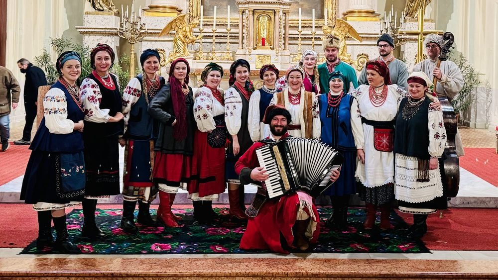
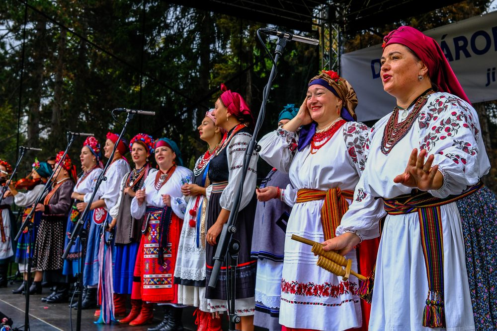
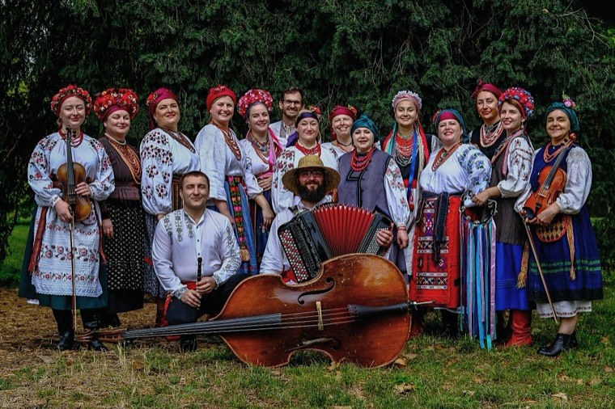

Old Ukrainian Christmas
Carols and shchedrivky with the Christmas star – a festive programme we present every year in Brno and Vienna.
Traditional Ukrainian polyphonic singing and live folk music from many regions of Ukraine.

Stages we have performed on include
About us
The Ukrainian folk ensemble Kupava was founded in February 2023 in Brno, Czech Republic, with the support of the Ukrainian Centre in Brno. We are dedicated to traditional Ukrainian polyphonic singing and folk music from many regions of Ukraine – sung in the original, in traditional dress and with live music.
The ensemble brings together Ukrainian women long settled in the Czech Republic, women who had to leave Ukraine after the Russian invasion in 2022, and Czechs who love Ukrainian folklore.
Artistic directorKateryna Mykhaylova
Kupava is an old Slavic name meaning “beautiful, festively dressed” or “a woman with a graceful, proud walk”.

We study and preserve Ukrainian folk songs, music and traditional costume.
We bring Ukrainian folklore to festival stages, concert halls and churches.
We foster encounters and understanding between Ukrainian and Czech culture.

Concert for Life II
In April 2025 Kupava performed at St Wenceslas Church in Ostrava in the charity Concert for Life II, broadcast live by TV Noe. Together with singer-songwriter Pavel Helan, the Czech-Ukrainian choir Sonjašnyk and the Spivanočky children’s choir we supported the rehabilitation of war veterans and injured children from Ukraine – viewers donated CZK 200,000.
Repertoire

Carols and shchedrivky with the Christmas star – a festive programme we present every year in Brno and Vienna.

Lyrical, ritual and dance songs in traditional polyphony with live music – for festivals, concert halls and cultural events.
Performances
Upcoming
46 performances since 2023 in total – festivals, concerts and community events in Czechia, Slovakia and Austria.
“A packed church in Brno enjoyed the atmosphere of an old Ukrainian Christmas.”Czech News Agency (ČTK), 5 Jan 2025 (translated)
News

On Saturday 5 December 2026 Kupava will sing old Ukrainian carols and shchedrivky on Moravské náměstí in Brno.
Read more →
On 5 September 2026 Kupava performed at the Lidový rok International Folklore Festival in Velká Bystřice.
Read more →
On 15 and 16 August 2026 Kupava performed at the Chod Festival in Domažlice.
Read more →
On 27 June 2026 Kupava performed in the Festival Gardens programme of Smetana’s Litomyšl.
Read more →Video
Ой, устану ранесенькоBabylonfest, Brno 2023
Славен єсиUkrainian carols
Зеленеє жито, зеленеBabylonfest, Brno 2023
Gallery
For media and organisers
High-resolution photographs, logo and a short biography of the ensemble for festival programmes, posters and press releases. When using the photographs, please credit “Kupava ensemble”.
Photographs
Kupava is a Ukrainian folk ensemble from Brno, Czech Republic, founded in February 2023. It is dedicated to traditional Ukrainian polyphonic singing and folk music from many regions of Ukraine, performed in the original language, in traditional dress and with live music. The ensemble has performed at the Strážnice International Folklore Festival, Smetana’s Litomyšl, the Chod Festival and in the live TV Noe broadcast of Concert for Life II. Artistic director: Kateryna Mykhaylova.
Contact
Interested in a performance by Kupava, need further information, or have an idea for a joint project? Please get in touch.